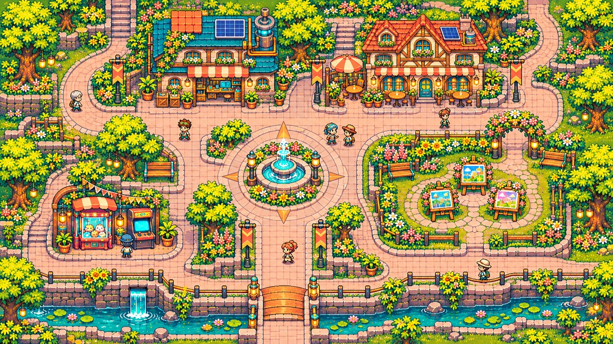
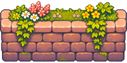
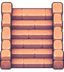
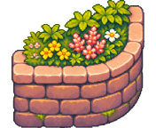
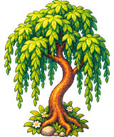
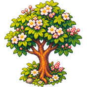
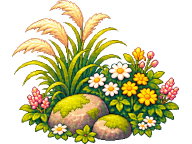
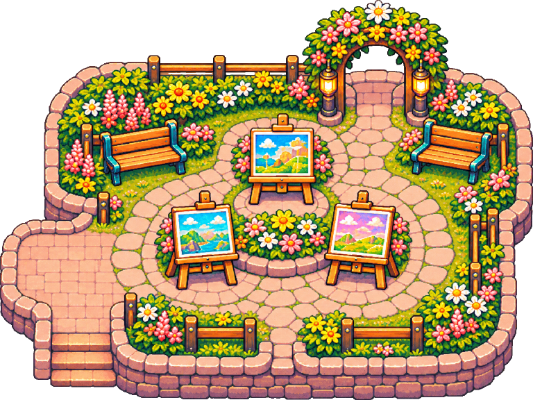
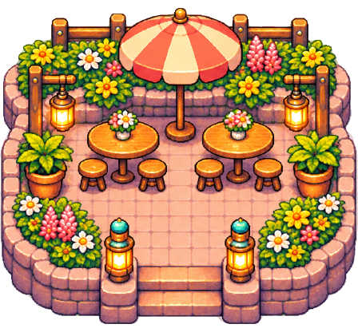
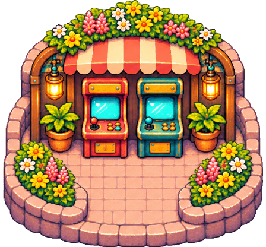

For scale: the current explorer is about 70 pixels tall. Zoom changes the preview only.
For scale: the current explorer is about 70 pixels tall. Zoom changes the preview only.Personal moments
Add short captions and stories to the existing gallery and café. The park stays directly accessible; photos never require a game or a scavenger hunt.
Uses existing content slots · Real content comes from youTOWN ATELIER / APPROVED PACK
Warmer stone, greener courtyards, and places that feel connected. The owner-approved environment is now part of the gameplay map.
Integrated · Offline composition reviewed · Browser/device QA not run

01 / WATCH THE LITTLE DETAILS
Pause, step through a loop, and compare the approved frames at their intended size. The gallery remains a reference; the integrated town uses the exported runtime cels.
Loading animation studies…
For scale: the current explorer is about 70 pixels tall. Zoom changes the preview only.
02 / THE TOWN’S FOUNDATION
Four surface families replace a single repeated lawn and pavement. Each sample below repeats a 128-pixel patch, so seams are visible for review.



The approved construction pieces are integrated as end caps, corner joins, terrain transitions, collision shapes, and foreground layers in the gameplay map.



03 / COMPOSED PLACES
Grouped scenes keep paths, planting, furniture, and buildings in the same visual language. The paintings use sample landscapes for this composition review.



The streets meet the courtyard entrances directly. Raised beds and curved walls block movement; the stairs and garden arch stay open. Browser/device movement has not been tested. Your real photos remain original quality when opened.
04 / LAYOUT REFERENCE
The gameplay map now follows this neighborhood order, with its own final placements and connected paths.
Landmarks first. The fountain and gallery entrance read together from the start. All three photo previews fit within the initial desktop view. The phone crop shows the fountain edge, the clear passage and the garden entrance.
Greenery frames the route. Continuous planting beds and rounded corners replace isolated decorations in large lawns.
Height has a purpose. Stairs connect raised gardens and the promenade; the waterfall drops from the same stone level.
05 / THE EXPERIENCE REVIEW
Six Luna reviewers covered the code and current experience. These future ideas are separate from the approved environment integration.
Add short captions and stories to the existing gallery and café. The park stays directly accessible; photos never require a game or a scavenger hunt.
Uses existing content slots · Real content comes from youExtend Milo’s stamp trail with a short visit to the arcade or café. A small routine gives visitors a destination without turning the town into a checklist.
Build on the current trail · Keep free explorationKeep readable fonts and the typewriter skip. Show a short story beat, then two or three clear question choices, with one consistent way back.
Proposed dialogue polish · Preserve keyboard navigationGive Market Match a first-win achievement and a saved best attempt count. A later optional postcard puzzle could use your photos without gating the gallery.
Review scope before adding a new modePERFORMANCE / WHAT CHANGED NOW
The latest build measures 687 KiB raw / 206 KiB gzip for initial HTML and directly referenced CSS/JS; the full export is 17.35 MiB across 209 files. The optional Phaser chunk is 1.34 MiB raw / 356 KiB gzip. The 2.45 MiB lossless welcome image remains the largest visible download. The paused town remains in memory intentionally for fast re-entry.
The offline composition was reviewed against the approved reference. Browser/device rendering, movement, FPS, memory, and mobile controls have not been tested.